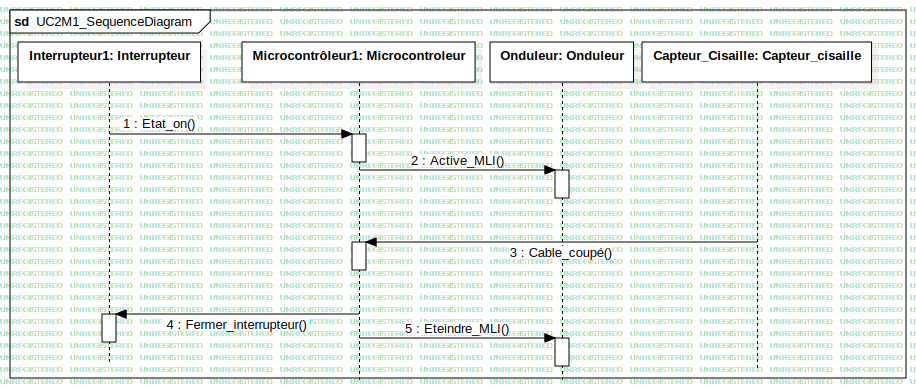

UC2M1_SequenceDiagram
UMLInteraction
SystemeBord_Aerostat
::
ArchitectureLogiciel_SystemeBord
::
UC2M1 Commander Onduleur Cisaille
::
UC2M1_SequenceDiagram
::
UC2M1_SequenceDiagram
Description
none
Diagrams

UC2M1_SequenceDiagram
Participants
Interrupteur1: Interrupteur
Microcontrôleur1: Microcontroleur
Onduleur: Onduleur
Capteur_Cisaille: Capteur_cisaille
Messages
Message1 (Interrupteur1→Microcontrôleur1)
Message2 (Microcontrôleur1→Onduleur)
Message3 (Capteur_Cisaille→Microcontrôleur1)
Message5 (Microcontrôleur1→Interrupteur1)
Message6 (Microcontrôleur1→Onduleur)
Properties
Name
Value
name
UC2M1_SequenceDiagram
stereotype
null
visibility
public
isReentrant
true
Owned Elements
UC2M1_SequenceDiagram